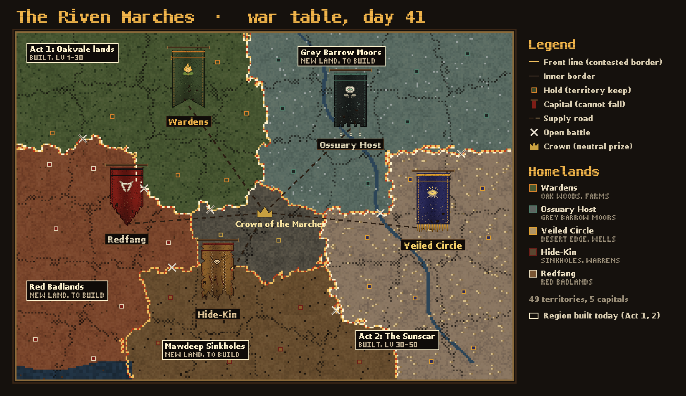
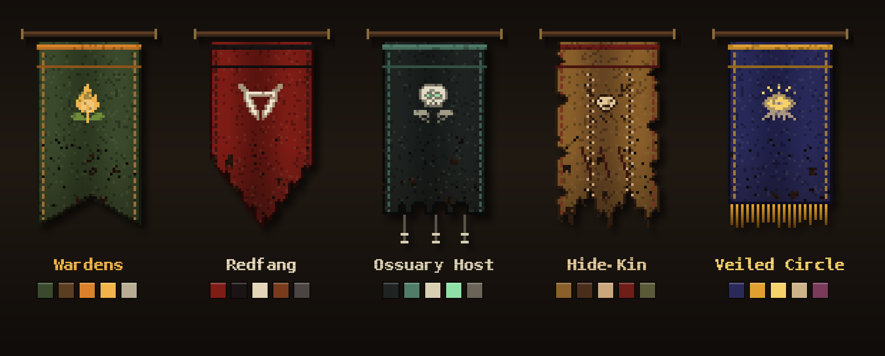
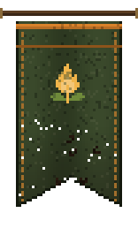
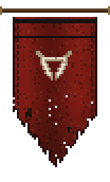
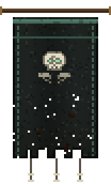
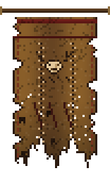
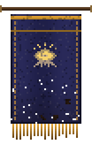
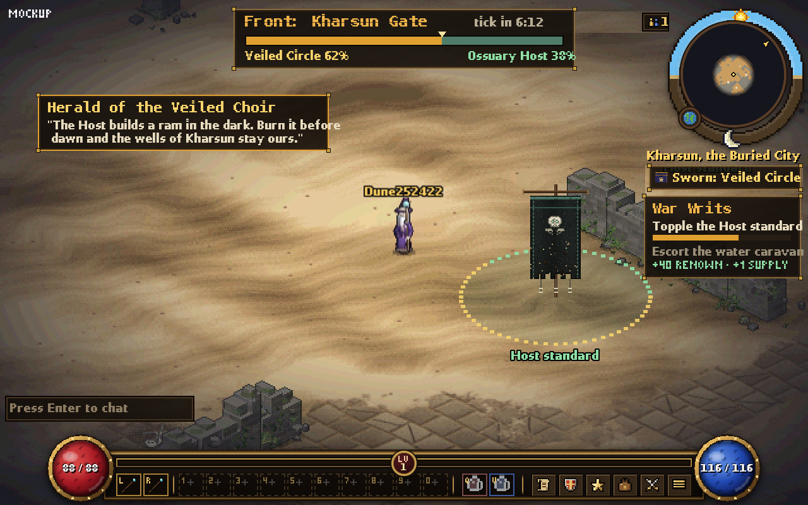
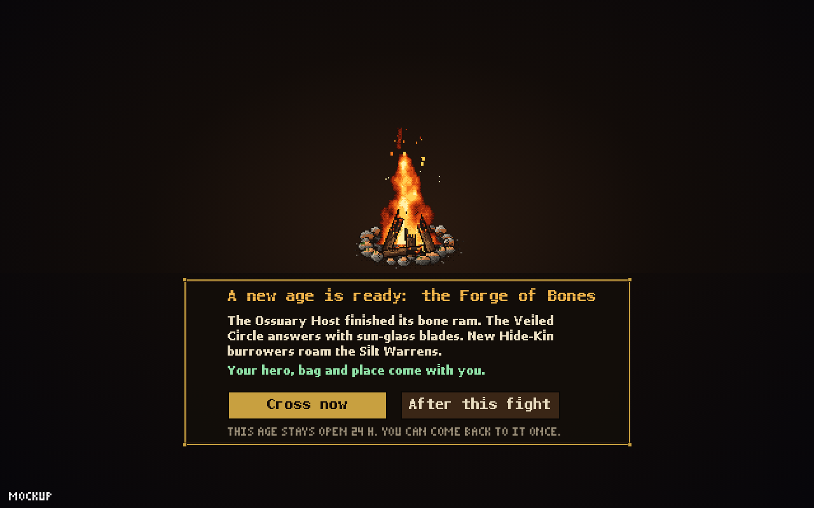

A slow war that never ends, between five clans, across the whole world: Oakvale, the Sunscar and every act still to come. AI warlords lead the clans and try to conquer each other's territory. Left alone, they mostly hold each other in check. Players tip the balance by taking war writs, joining battles at the front, or escorting a single caravan.

Most of the war can be built from systems that already run on the live server. This plan reuses them instead of starting parallel ones.
| Existing system | Where | Role in the war |
|---|---|---|
| Necromancer war works: skeletons build catapults, rams and siege towers at work sites | shared/siege.ts | Siege engines become real war assets. A finished ram can break a Hold's gate; players sabotage the work sites. |
| Champions with family affixes and names | shared/champions.ts | War captains, and the affix pool the Forge draws from when an AI designs a new monster. |
| Night Raiders, seven riders who roam both acts | shared/raiders.ts | A neutral wild card that hits whichever clan is strongest, so no one runs away with the map. |
| Bounty boards at portal stones and on the square | shared/bounty.ts | The board format becomes War Writs posted by the clans. |
| Groups, shared zone XP, tougher mobs per member | shared/party.ts | Warbands of up to 4. The same scaling keeps a zerg from flattening a front. |
| Undead keep the night, day/night clock | shared/daynight.ts | The Ossuary Host pushes at night, the Veiled Circle at noon. Timing becomes strategy. |
| Redfang camp lookouts, horn, patrols, tree ambushers | shared/bandits.ts | Redfang raid doctrine: lookouts, ambushes on supply roads. |
| Map bands (Act 1, Mawdeep, desert) in one room, deterministic map | shared/map.ts, shared/desert.ts | The Marches become a fourth band, built from code like the desert. |
| Seamless deploys: heroes come back where they stood | server/handoff.ts, client/src/reconnect.ts | The base for moving a player into a newer Age without a reload they notice. |
| Player /idea board, voting, bot drafting rules | shared/ideas.ts | The approval pipeline and allowlists reused for AI-authored changes. |
| Balance sims (duel, PvE, zones, bosses) | tools/balance/ | Gate every AI-forged weapon or monster before it goes live; a new war sim checks the stalemate. |
| Procedural art pipeline | tools/art, weaponArt.ts | Lets forged items and monsters get real pixel art from parameters, in the same style. |
Murat 2026-11-14: the war runs across the full map, not in a separate region. Every monster zone of Act 1 and Act 2 becomes a territory, and every future act adds its zones as new regions of the same war. "The Riven Marches" is the name of the war and of the war table.
Territories. About 24 in Act 1 (one per zone in SPAWN_ZONES, big zones split in two) and about 15 in Act 2. The owner decides which clan's troops spawn there, whose banners fly and whose writs are posted. Zone names, levels and quest areas stay as they are.
Sanctuaries that never flip. Villages (Oakvale, Saltmere, Kel Ashar), dungeons (Mawdeep, the deep crypts), quest-boss lairs and the waygates. New heroes can always level and finish the story; the war is around them, not in their way.
Levels. Each territory keeps its zone level. Clan troops spawn at that level, so a level 8 meadow is a small skirmish and a level 45 dune is a hard front. Players fight where their level fits; high-level heroes can push low territories but earn little there.
Crowns. One ruined stronghold per act (to pick with the map thread, outside any boss lair) is a Crown: a neutral prize that gives the holder a world-wide boon while held.
siege.ts).Every clan grows out of enemies players already know, so the war feels like the world's story moving on. Each has one doctrine mechanic that only it can use. That gives the AI leaders different tools and gives players a reason to pick a side.




siege.ts). Raises the fallen of every battle as fresh troops. Strong at night, sluggish by day.

Each clan beats one neighbour on the cycle and is beaten by another. Whoever pulls ahead is exposed to its counter, so the cycle itself pushes toward balance. The bonus is a +20% pressure modifier, not a hard win.
Wild cards, not clans. The Night Raiders ride against whichever clan holds the most land. Hamlet villagers can rise against a harsh owner. Neither can be led by an AI.
The server runs a war tick every 10 minutes. On each tick, every border between two clans gets a pressure score and Control shifts a few points toward the stronger side. When a territory's Control falls below 25, a siege window is announced on the map one hour ahead, so players can show up. The siege itself is a 20-minute event at the Hold. If the attacker holds the gate at the end, the territory flips.
Resources travel by visible caravan along supply roads. Players escort or raid them.

At any war table (one on each village square) a hero can swear to a clan until they choose to leave (a 7-day cool-down before swearing to another clan). Sworn heroes wear the tabard, are left alone by that clan's troops, and earn Renown ranks with rewards in the clan's style. A hero who doesn't swear is a sellsword who takes writs from anyone and earns gold, not rank. Yes, a hero can swear to the Ossuary Host: the dead accept anyone who brings bones.
Murat's goal is that the AIs mostly hold each other in place unless one finds a clever plan. The rules push that way on purpose:
Supply drops with every territory away from the capital. A big clan is a thin clan.
Defending costs less than attacking (×1.3), and capitals never fall.
Growing exposes you to the clan that counters you.
AI leaders see a threat score; when one clan leads, the others are pushed to truce and turn on it.
Night Raiders and angry hamlets hit the biggest clan.
Players earn more helping the clan that's losing.
This gets tested before any AI is plugged in: a headless war sim (tools/balance/war.ts, next to pve.ts and duel.ts) plays 1,000 simulated years of war with simple scripted leaders. Target: without players, no clan holds more than 30% of the map for more than three war days in a row, and a "clever" scripted plan (feint plus night push) can win a few territories but not the Crown.
Two layers. A fast deterministic layer inside the game server moves troops every tick and needs no AI calls. A slow strategic layer, the War Council, is a language model that thinks once per war day (and when something big happens) and gives orders. The model never touches the game directly: it can only send orders the rules accept.
set_stance(border, push | hold | feint)move_garrison(from, to, share)build(territory, wall | engine | ritual | tunnel)route_caravan(resource, road)post_writ(territory, task, reward)send_envoy(clan, offer): truce, pact, tributeproclaim(text): a herald line players seecommission(forge recipe): see the Forge belowEach order costs resources or time. The validator rejects anything over budget or against the rules, and tells the council why.
The council can't change rules, but it can combine them: feints that pull defenders away, timing pushes with day and night, starving a front by raiding its roads, a truce with one neighbour to free troops for another, posting rich writs to draw players to its front, or a Hide-Kin tunnel that opens behind a line. These are the "ingenious plans" that break a stalemate without breaking the game.
Clans can invent things, but only inside a Codex: a recipe space built from parts the game already has. A recipe is data, not code, so it can go live without a restart and be removed the same way.
weaponArt.ts) + damage type (fire, cold, poison, faith) + affixes within its item-level budget + clan look.
Example: Sun-glass Scimitar (Veiled). Faith damage, blinds undead briefly. Drops from Veiled war captains and is a sworn reward.
pve.ts, duel.ts) and a lore check against a world guide.tools/art pipeline from the parameters, at the same pixel size as everything else.Changes come in three tiers. The deeper the change, the more checks it goes through and the more gently it reaches players.
Troop moves, writs, proclamations. Just war state. Applied on the next tick, no deploy.
Forged monsters and weapons, banners, dialogue. Data checked against schemas and sims, loaded by the running server and pushed to clients. No restart. Removable.
A new doctrine mechanic or engine type. Opened as a PR in a sandboxed folder, CI, sims and reviewer agent. Ships by itself as a new Age players step into; rolls back by itself if errors rise.
Where AI code is allowed. Clan code lives in plug-in folders (shared/war/clans/<clan>/) behind a fixed interface, like the skill engine. The PR bot may only touch its own clan's folder and data tables, under 200 lines, the same allowlist idea as the /idea feature. These PRs auto-merge when every check passes, with no approval (Murat 2026-11-14). In return: the code may never touch saves, accounts, money or the core engine; a new Age rolls back automatically if crashes or errors go up after release; and each one is emailed to Murat ("flagged") with what changed.
What changes in hosting. Today one Railway service restarts on each merge and the handoff puts heroes back in a few seconds. To run two versions side by side, saves move from saves.json to a database both can share (Postgres on Railway), and the war state moves into a small separate service that both versions read and write through a versioned API.

prefetchBuild already does this), and the hero appears in the same spot in the new Age.xpv migrations), so a hero can go back if the new Age is rolled back.mapframe.ts), with territories tinted lightly in the owner's cloth colour.Everything stays at one pixel resolution (32 px tiles), dark and weathered, in the game's pixel font for all text on screen, as Murat asked.
Saves to a database, war state as its own small service, a war sim in tools/balance. Nothing visible to players yet.
The map band, 49 territories, Holds, standards, ticks and sieges, led by simple scripted doctrine. Prove the stalemate in the sim and live.
Swearing, tabards, war writs, caravans, Renown ranks, the war table map, the front plaque.
First in shadow mode: councils plan and we compare with the scripted doctrine. Then they lead, with herald lines and the chronicle page.
Codex, recipe checks, art from parameters, hot-loaded content packs.
Two versions side by side, gateway, opt-in crossing, Vanguard canary, rollback.
Clan plug-in folders, the PR bot, automatic release as a new Age with auto-rollback, email flags and daily digest.